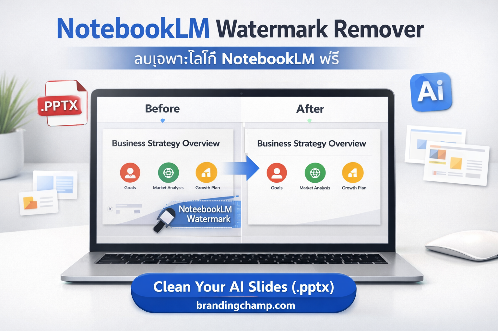
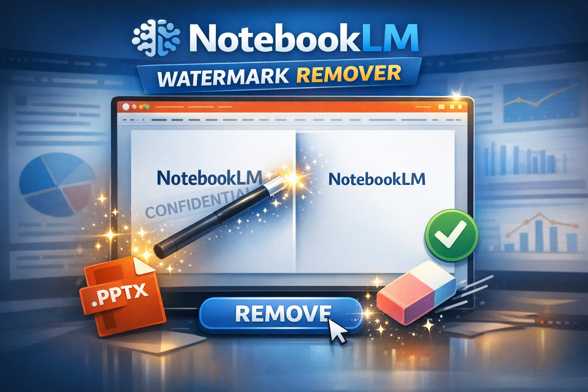
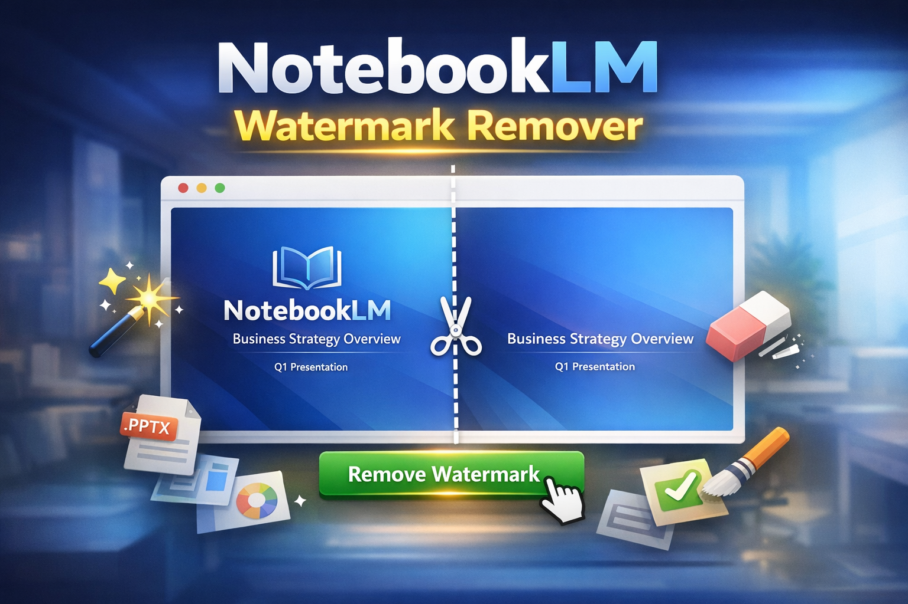

NotebookLM Watermark Remover วิธี ลบลายน้ำ พรีเซนเตชั่น NotebookLM (*.pptx) ฟรี [ลบเฉพาะโลโก้ NotebookLM]
ลบลายน้ำ NotebookLM
ในยุคที่ปัญญาประดิษฐ์ (AI) เข้ามามีบทบาทสำคัญในการทำงาน Google NotebookLM ได้กลายเป็นเครื่องมือยอดนิยมสำหรับนักวิจัย นักศึกษา และคนทำงานที่ต้องการสรุปข้อมูลและแปลงเป็นสไลด์ พรีเซนเตชั่น (Presentation) ได้อย่างรวดเร็ว อย่างไรก็ตาม ปัญหาใหญ่ที่ผู้ใช้หลายคนพบเจอคือ ไฟล์ .pptx ที่ถูกสร้างออกมา มักจะติด ลายน้ำ (Watermark) หรือ โลโก้ NotebookLM มาด้วย ซึ่งอาจไม่เหมาะสมสำหรับการนำไปใช้ในบริบททางธุรกิจ การประชุมลูกค้า หรือการส่งงานที่ต้องการความสะอาดตาของดีไซน์
บทความนี้จะพาคุณไปรู้จักวิธีการ ลบลายน้ำ NotebookLM อย่างง่าย รวดเร็ว และ ฟรี เพื่อให้คุณได้สไลด์ที่พร้อมใช้งานระดับมืออาชีพทันที โดยไม่ต้องเสียเวลาแก้ไขทีละหน้าด้วยตนเอง
ทำไมการ ลบโลโก้ NotebookLM จากไฟล์ PPTX จึงสำคัญ?
แม้ว่า NotebookLM จะเป็นเครื่องมือที่ยอดเยี่ยมในการช่วยคิดและจัดระเบียบข้อมูล แต่เมื่อถึงขั้นตอนการนำเสนอ (Present) ภาพลักษณ์ของสไลด์มีความสำคัญไม่น้อยไปกว่าเนื้อหา
- ความน่าเชื่อถือ (Credibility): การมีโลโก้ของเครื่องมือ AI ติดอยู่ อาจทำให้ผู้ฟังรู้สึกว่างานนี้ไม่ได้ผ่านการกลั่นกรองหรือออกแบบโดยมนุษย์อย่างเต็มที่
- แบรนด์ดิ้งขององค์กร (Corporate Branding): บริษัทส่วนใหญ่มีคู่มือการใช้สีและฟอนต์ (Brand Guidelines) การมีโลโก้ภายนอกมาปะปนอาจขัดกับนโยบายภาพลักษณ์องค์กร
- ความสะอาดของสายตา (Visual Cleanliness): พื้นที่บนสไลด์มีจำกัด การมี ลายน้ำ มาบังเนื้อหาสำคัญอาจทำให้การสื่อสารขาดประสิทธิภาพ

ดังนั้น การหาเครื่องมือที่จะช่วย ลบเฉพาะโลโก้ NotebookLM ออกจากไฟล์ต้นฉบับ จึงเป็นทางออกที่คนทำงานยุคใหม่ต้องการ
ทางออกใหม่: เครื่องมือ ลบลายน้ำ พรีเซนเตชั่น NotebookLM ฟรี
หากคุณไม่ถนัดการเข้าไปแก้ใน Slide Master ของ PowerPoint หรือกลัวว่ารูปแบบสไลด์จะเพี้ยนไปจากการจัดหน้าเดิม มีโซลูชันที่สะดวกกว่านั้นคือการใช้บริการออนไลน์ที่ออกแบบมาเพื่อเรื่องนี้โดยเฉพาะ
เราขอแนะนำเครื่องมือจาก Branding Champ ที่พัฒนาขึ้นมาเพื่อตอบโจทย์นี้โดยตรง บริการนี้ช่วยให้คุณสามารถอัปโหลดไฟล์ NotebookLM Presentation (*.pptx) และ系统进行การ ลบลายน้ำ ออกได้อย่างแม่นยำ โดยยังคงโครงสร้างและฟอนต์เดิมไว้ครบถ้วน
จุดเด่นของเครื่องมือนี้
- รองรับไฟล์ PPTX: ทำงานได้ตรงต้นกับไฟล์ที่ส่งออกมาจาก NotebookLM
- ลบเฉพาะจุด: มุ่งเน้นการ ลบเฉพาะโลโก้ NotebookLM โดยไม่กระทบต่อเนื้อหาข้อความหรือรูปภาพที่คุณใส่เพิ่ม
- ใช้งานฟรี: ไม่ต้องเสียค่าใช้จ่ายในการเข้าถึงฟีเจอร์พื้นฐาน
- รวดเร็ว: ประมวลผลภายในเวลาไม่กี่วินาที
ขั้นตอนการใช้งาน วิธี ลบลายน้ำ NotebookLM
การใช้งานเครื่องมือ ลบลายน้ำ พรีเซนเตชั่น นั้นง่ายมาก ไม่จำเป็นต้องมีความรู้ด้านเทคนิคสูง เพียงทำตามขั้นตอนดังนี้:
- เตรียมไฟล์: ส่งออกงานจาก Google NotebookLM เป็นไฟล์ .pptx มาเก็บไว้ในเครื่อง
- เข้าถึงเครื่องมือ: เข้าไปที่ลิงก์บริการ ลบโลโก้ NotebookLM
- อัปโหลดไฟล์: เลือกไฟล์พรีเซนเตชั่นที่คุณต้องการแก้ไข
- ประมวลผล: ระบบจะทำการสแกนและ ลบลายน้ำ ออกอัตโนมัติ
- ดาวน์โหลด: รับไฟล์ใหม่ที่สะอาดตา พร้อมนำไปนำเสนอทันที
เคล็ดลับการตกแต่งสไลด์หลัง ลบลายน้ำ
หลังจากที่คุณได้ไฟล์ที่ ลบโลโก้ NotebookLM ออกแล้ว เพื่อให้พรีเซนเตชั่นของคุณดูสมบูรณ์แบบยิ่งขึ้น ควรพิจารณาปรับแต่งเพิ่มเติมดังนี้:
- ตรวจสอบฟอนต์: บางครั้งการแปลงไฟล์อาจทำให้ฟอนต์ไทยเพี้ยนเล็กน้อย ควรตรวจสอบความถูกต้องก่อนนำเสนอ
- เพิ่มโลโก้บริษัท: เมื่อพื้นที่โลโก้ AI ว่างลง คุณสามารถนำ โลโก้ขององค์กร คุณไปวางแทนที่ได้ในตำแหน่งที่สมดุล
- ปรับสีให้สอดคล้อง: ใช้เครื่องมือใน PowerPoint ปรับโทนสีให้เข้ากับธีมงานของคุณ
ข้อควรระวังและจริยธรรมในการใช้งาน
แม้ว่าการ ลบลายน้ำ จะช่วยให้งานดูสวยงามขึ้น แต่ผู้ใช้ควรตระหนักถึงข้อกำหนดในการใช้งาน (Terms of Service) ของ Google NotebookLM ด้วย
- ลิขสิทธิ์เนื้อหา: ตรวจสอบให้แน่ใจว่าคุณมีสิทธิ์ในเนื้อหาที่นำมาสร้างสไลด์
- การอ้างอิง: หากเป็นการนำเสนองานวิชาการหรืองานวิจัย การระบุว่าใช้เครื่องมือ AI ช่วยในการสรุปข้อมูลยังคงเป็นสิ่งที่ดีต่อความโปร่งใส แม้จะ ลบโลโก้ ออกแล้วก็ตาม
- การใช้งานเชิงพาณิชย์: หากนำไปใช้ขายหรือหารายได้ ควรศึกษาเงื่อนไขของแพลตฟอร์มต้นทางให้ละเอียด
สรุป: ยกระดับงานนำเสนอของคุณวันนี้
อย่าปล่อยให้ ลายน้ำ มาฉุดรั้งความมืออาชีพของงานคุณ การมีเครื่องมือช่วย ลบโลโก้ NotebookLM จากไฟล์ .pptx จะช่วยประหยัดเวลาให้คุณได้โฟกัสกับเนื้อหาและการฝึกซ้อมนำเสนอแทนที่จะมานั่งแก้ดีไซน์
หากคุณพร้อมที่จะเปลี่ยนไฟล์พรีเซนเตชั่นดิบ ให้กลายเป็นสไลด์ระดับมืออาชีพที่สะอาดตาและพร้อมใช้งาน สามารถเข้าถึงเครื่องมือได้ทันทีผ่านลิงก์ด้านล่างนี้
เริ่มต้นสร้างงานนำเสนอที่ไร้ที่ติกับ Branding Champ วันนี้ เพื่อให้ทุกสไลด์ของคุณสื่อสารได้อย่างทรงพลังที่สุด
คำเตือน: เครื่องมือนี้มีวัตถุประสงค์เพื่อช่วยในการแก้ไขไฟล์ส่วนบุคคล โปรดใช้งานด้วยความรับผิดชอบและเคารพสิทธิ์ในทรัพย์สินทางปัญญาตามข้อกำหนดของเจ้าของแพลตฟอร์มต้นทาง
